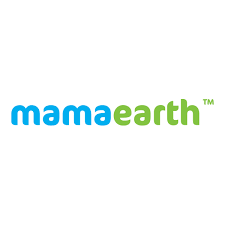
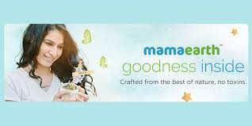
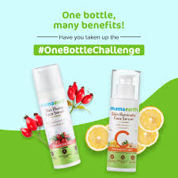

How purpose-driven storytelling + influencer performance built India's fastest D2C beauty brand from zero to hero.

Mamaearth didn't sell skincare — it sold conscious choices. Purpose marketing created trust, influencer challenges created virality. Perfect D2C growth formula.
Case study: Goodness is a Choice → millennial values + transparency → #OneBottleChallenge → micro-influencer conversion. Trust fed performance.
Millennials don't buy products — they buy purpose. Mamaearth positioned as toxin-free choice for conscious consumers skeptical of legacy "herbal" claims.
Strategy: certifications + transparency + relatable storytelling. No discounts, just values that resonated with urban parents and young professionals.
"Modern brands don't sell features — they sell alignment with customer values. Mamaearth made toxin-free a lifestyle choice."
Social-first distribution: Instagram stories → YouTube explainers → transparent landing pages. Built trust that converted to repeat purchases over time.

Reduced purchase friction to minimum: try ONE product, share results. Micro-influencers created authentic routine content that felt like peer recommendation.
Short-form mastery: Reels + Shorts optimized for algorithm + authenticity. Challenge format created viral user-generated content loop.
"Influencers don't sell — they prove. #OneBottleChallenge made trial so easy, conversion became inevitable."
Perfect funnel: influencer discovery → product page social proof → retargeting → purchase. Scaled trust into massive acquisition.

Toxin-free + transparency positioned Mamaearth as conscious choice vs legacy chemical brands.
Clinical proof + relatable narratives built credibility faster than traditional advertising.
Niche creators created authentic recommendations that converted better than celebrity ads.
#OneBottle reduced risk to minimum — try one product, share, convert naturally.
Challenge format created user-generated content loop that scaled organically.
Emotional campaigns built equity. Influencer campaigns monetized it. Perfect synergy.
Mamaearth proves D2C success = purpose (trust) + performance (scale). Values created emotional loyalty. Influencers created viral growth. Perfect modern brand formula.
Universal lesson: build what customers believe in, then make trial irresistible. Purpose campaigns create equity. Performance campaigns monetize it sustainably.
For any digital brand: align with millennial values → activate micro-influencers → optimize trial funnels → scale virally.
At Brand Business Talk, we help brands with research, strategy, market insights, and growth recommendations. Let's build your brand growth strategy together.